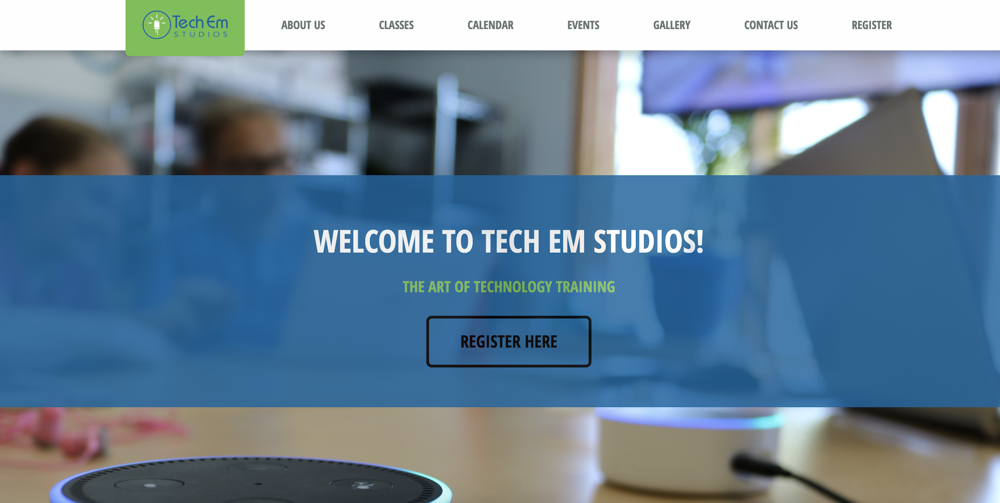

Website Redesign Maggie 2018
Maggie Liu, 2018-07-10, General
Maggie Liu, 2018-07-10, General
Our interns worked hard over the past couple of weeks to update and redesign Tech Em Studios’ website. To kickoff this redesign, it was all pens and paper; the interns worked to design what they wanted each page to look like on paper. With the plans for the redesign established, they went to work on the code (HTML, CSS, and JS). As a team, they worked using a forked github repo from our old website to make changes without affecting the live site. There were many bugs to fix as modifications were made, and the interns worked as a team to divide and conquer the tasks of the various pages. They worked using Slack to communicate and share resources. Below, our intern Maggie describes her experiences working on this project. We are excited to present our new and improved website!

Date: June 25th, 2018.
Time: 0800.
Subject: TOP SECRET – MISSION IMPOSSIBLE.
From: TechEm Studios.
To: Interns A, M, R, W.
Greetings, all. You do not know me, and I do not know you, but you must trust me. Our organization is sending you on a near-impossible mission. THIS IS NOT A DRILL, I REPEAT, THIS IS NOT A DRILL. It’s your first day here, and we do not expect you to be completely familiar with the mission structure, but on behalf of the organization, I thank you for taking up this enormous task. You may find the details of the mission below. For now, I must sign off. There are a few miniature humans that I must take care of. Should you have any questions, feel free to send a messenger pigeon. Not a passenger pigeon; those are extinct. Interns, I wish you all the best of luck. Farewell, and godspeed.
Mission details: redesign the TechEm site, found here. Missions basics: utilize HTML/CSS/Javascript skills in order to bring a new start to the dreaded TechEm website. Mission difficulty: near impossible.
Date: July 9th, 2018.
Time. 1357.
Subject: MISSION REPORT
From: Intern M.
To: TechEm Studios.
Chief: The mission has been completed. We interns have risen above the difficulty, and we now present to you the newest version of the site, found here. We didn’t know how much you expected, but we risked everything, hacking away through the night, in order to produce something that would satisfy you. You may be surprised to hear that we received help from an inside informant, Agent G, who was of the utmost help and greatly augmented our chance of success. But we’re not here to talk about that. Below, I have attached three documents on the mission, each detailing a different part of the experience. Chief, I have not slept in three days. Please forgive me as I sign off. - Intern M
At first, it seemed like we four interns were all the same: young, scared, and inexperienced. However, it quickly came to my attention that we all excelled in different fields and were passionate about different topics. Intern A, for instance, had never used HTML before but could learn in a single day. Intern R had been in contact with the language but needed a refresher, while Intern W was our go-to for questions on HTML, CSS, and Javascript. Meanwhile, I preferred to write the descriptors on the site. Even though we seemed a bit incomplete alone, we worked together and, through our amazing synergy, completed this impossible mission. It would have been hard alone, and when we first started, it was. How could we all work on the same Github repository when Github doesn’t show who’s on and who’s not? How could we all work together when we didn’t even know each other? How, how, how? Well, as it turned out, we could simply tell each other that we were working on a page, and the others would not touch the page until it became free again. This was so Github did not cancel out anyone’s hard work. It also turned out that, while we still don’t know much about each other, we can still be friends and laugh together. What unusual friendships forged through trial and error.
I would be lying if I said we ran into absolutely zero issues during this mission. In fact, we ran into a lot of issues. It would take an entire day for me to finish. Some of the more memorable (read: death-defying) ones include: pictures, Javascript, and buttons. Pictures, pictures, pictures. No website would be complete without pictures, but gosh darn are they hard to tame! Image after image, trial after trial. We manipulated CSS well into the night, as the clock ticked down, red and urgent. We hard-coded the images in, placed them exactly where we wanted them to be, and it all seemed fine – until we tested the mobile site. The mobile site itself was an issue. How did something that looked so great on desktop look so bad on mobile? We added media query after media query (although I was not the one who did so), until at the end, the mobile site looked almost as good as the desktop version. Almost. Javascript. Ah, that one Java-like language that I should have learned but didn’t. Nope, I had nothing to do with the Javascript, but from what I remember, Agent G and Interns A and W worked on that relentlessly, rushing for time, yet trying so hard to maintain quality. I admire them, and in the end, everything worked out fine. Now we come to the buttons. The dreaded, terrible buttons. I worked closely with these little monsters, and what I learned was that no one – no one – could figure out the spacing. See, it was weird, we could space the homepage buttons perfectly, but the contact page buttons just would not obey. We stressed our hair out over it, but suddenly, miraculously, after we had left it off for a few days, it had been fixed! Mysterious benefactor, Intern M thanks you with all her heart.
I really want to say that I learnt HTML. Of course, being such a serious organization, I’m sure I would get yelled at for that. I must have learned something other than HTML during these days, but what? Is my memory really so bad that I cannot remember? No, not yet. What did I learn? I learnt how to, first off, use ‘learnt’ and ‘learned’ interchangeably, but more so, I learnt how to open up. When I first entered the company, I thought I knew nothing. I felt incompetent (and sometimes I still do), like everyone else knew more than me, was better than me. But I soon learned that we were all one of the same: young, scared, and inexperienced. We didn’t know more than each other; heck, we barely even knew each other. And so we came together, united in our know-nothing. We came together, one of the same, and we learned that, no matter who we were, we could do it. We grew together, learned together, fell down and got up together. We helped each other up from the fall, and in the end, we crossed the finish line together. You said, Chief, that this was an impossible mission. We learned that it was not. It was entirely and completely possible, but we just had to learn how to make it so. And so we did.